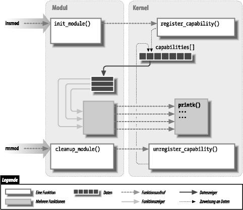

Es ist allerhöchste Zeit, daß wir mit dem Programmieren anfangen. In diesem Kapitel lernen Sie alle notwendigen Konzepte aus dem Bereich Modul- und Kernel-Programmierung kennen. Auf diesen wenigen Seiten werden wir ein vollständiges Modul programmieren. Das dabei erworbene Wissen ist grundlegend für jede Art von modularisiertem Treiber. Um nicht zu viele Konzepte auf einmal einzuführen, reden wir in diesem Kapitel nur über Module und beziehen uns dabei nicht auf irgendwelche Geräte-Klassen.
Alle Bestandteile des Kernels (Funktionen, Variablen, Header-Dateien und Makros), die hier eingeführt werden, werden in der Zusammenfassung am Ende des Kapitels beschrieben.
Für ungeduldige Leser enthält der folgende Code ein vollständiges “Hallo Welt”-Modul (das nichts Besonderes macht). Dieser Code läßt sich unter den Kernel-Versionen 2.0 bis 2.4 übersetzen:[1]
#define MODULE
#include <linux/module.h>
int init_module(void) { printk("<1>Hallo, Welt\n"); return 0; }
void cleanup_module(void) { printk("<1>Ade, du grausame Welt\n"); }
|
Die Funktion printk ist im Linux-Kernel definiert und funktioniert ähnlich wie printf aus der Standard-C-Bibliothek. Der Kernel braucht eine eigene Ausgabefunktion, da er nicht auf die C-Bibliothek zurückgreifen kann. Das Modul kann printk aufrufen, denn nachdem es mit insmod geladen worden ist, ist das Modul zum Kernel hinzugelinkt und kann auf dessen öffentliche Symbole (Funktionen und Variablen, siehe den nächsten Abschnitt) zugreifen. Der String <1> gibt die Priorität der Meldung an. Wir haben in diesem Modul eine hohe Priorität (eine kleine Zahl) verwendet, weil eine Meldung mit der Default-Priorität eventuell — je nach verwendeter Kernel-Version, der Version und der Konfiguration des klogd-Daemons — auf der Konsole nicht zu sehen sein könnte. Sie können das aber fürs erste ignorieren, wir gehen darauf im Abschnitt “the Section called printk in Kapitel 4” in Kapitel 4 näher ein.
Sie können das Modul testen, indem Sie insmod und rmmod wie im nächsten Abschnitt gezeigt aufrufen. Beachten Sie, daß nur der Superuser ein Modul laden und wieder entfernen kann.
Die oben gezeigte Quelldatei kann nur dann wie gezeigt geladen und entladen werden, wenn die Unterstützung für Modul-Versionen im Kernel abgeschaltet ist; die meisten Distributionen installieren aber Kernel mit Versionsunterstützung (das Thema Versionsunterstützung behandeln wir in Kapitel 11). Ältere Versionen der modutils erlauben zwar das Laden von Modulen ohne Versionsinformationen in Kernel mit Versionsunterstützung, aber das ist nicht länger möglich. Um dieses Problem mit hello.c zu lösen, enthalten die Quellen im Verzeichnis misc-modules des Beispiel-Codes einige weitere Zeilen, mit denen der Code sowohl in Kerneln mit als auch ohne Versionsunterstützung funktioniert. Wir empfehlen Ihnen aber dringend, einen eigenen Kernel (ohne Versionsunterstützung) zu bauen und zu installieren, bevor Sie den Beispiel-Code ausführen.[2]
root# gcc -c hello.c root# insmod hello.o Hallo, Welt root# rmmod hello.o Ade, du grausame Welt root# |
Je nach Verfahren, das Ihr System verwendet, um die Meldungen auszugeben, kann die Ausgabe unterschiedlich aussehen. Die obenstehende Ausgabe stammt aus einer Text-Konsole; wenn Sie insmod und rmmod aus einem xterm heraus ausführen, werden Sie nichts in Ihrem Terminal sehen. Suchen Sie statt dessen in den System-Protokolldateien wie /var/log/message (der Name kann sich von Distribution zu Distribution unterscheiden). Der Mechanismus, mit dem Kernel-Meldungen ausgegeben oder aufgezeichnet werden, wird in “Protokollierung von Meldungen” in Kapitel 4 beschrieben.
Wie Sie sehen, ist es gar nicht so schwierig, ein Modul zu schreiben. Schwierig ist es vor allem, Ihr Gerät zu verstehen und die Performance zu maximieren. Wir werden die Modularisierung in diesem Kapitel immer weiter vertiefen und die gerätespezifischen Fragen für die anderen Kapitel aufheben.
Bevor wir weitermachen, sollten wir noch die diversen Unterschiede zwischen einem Kernel-Modul und einer Applikation hervorheben.
Während eine Applikation eine einzige Aufgabe vom Anfang bis zum Ende durchführt, registriert sich ein Modul, um zukünftige Anfragen zu bedienen; seine main-Funktion beendet sich sofort wieder. Mit anderen Worten: Es ist die Aufgabe von init_module (dem Einsprungpunkt in das Modul), den späteren Aufruf der Funktionen des Moduls vorzubereiten. Das ist, als würde das Modul sagen: “Hier bin ich, und das kann ich.” Der zweite Einsprungpunkt eines Moduls, cleanup_module, wird unmittelbar, bevor das Modul entladen wird, aufgerufen. Die Funktion sollte dem Kernel folgendes mitteilen: “ich bin nicht mehr da, bitte mich nicht mehr, etwas zu tun.” Die Fähigkeit, ein Modul zu entladen, ist eines der Merkmale der Modularisierung, die Sie besonders schätzen lernen werden, da es die Entwicklungszeit deutlich herabsetzt. Dadurch können Sie neue Versionen Ihres Treibers testen, ohne den Rechner erst lange herunterfahren und neu starten zu müssen.
Als Programmierer wissen Sie, daß eine Applikation Funktionen aufrufen kann, die sie nicht selbst definiert: Beim Linken werden externe Referenzen mit Hilfe der passenden Funktionsbibliothek aufgelöst. printf ist eine dieser aufrufbaren Funktionen, die in libc definiert ist. Ein Modul ist andererseits nur gegen den Kernel gelinkt. Die einzigen Funktionen, die es aufrufen kann, sind die, die der Kernel exportiert; es gibt keine Bibliotheken, gegen die gelinkt wird. Die Funktion printk beispielsweise, die wir in hello.c oben verwendet haben, ist die Version von printf, die im Kernel definiert ist und für die Module exportiert wird. Sie verhält sich mit wenigen Ausnahmen (so hat sie beispielsweise keine Unterstützung für Fließkomma-Ausgaben) genauso wie die originale Funktion.
Abbildung 2-1 zeigt, wie Funktionsaufrufe und Funktionszeiger in einem Modul verwendet werden, um neue Funktionalität zu einem laufenden Kernel hinzuzufügen.
Abbildung 2-1. Ein Modul zum Kernel linken

Weil keine Bibliothek zu den Modulen gelinkt wird, sollten Quelldateien nie die üblichen Header-Dateien einbinden. Nur Funktionen, die zum Kernel selbst gehören, dürfen in Kernel-Modulen verwendet werden. Alles, was zum Kernel gehört, ist in den Header-Dateien in include/linux und include/asm (normalerweise unterhalb von /usr/src/linux) definiert. Ältere Distributionen (die auf der libc-Version 5 oder früher basieren) hatten oft symbolische Links von /usr/include/linux und /usr/include/asm auf die eigentlichen Kernel-Quellen, so daß der Include-Baum der libc auf die Header-Dateien der installierten Kernel-Quellen verweisen konnte. Diese symbolischen Links machten es User-Space-Anwendungen einfach, Kernel-Header-Dateien einzubinden, was ab und zu einmal nötig ist.
Auch wenn die User-Space-Header-Dateien jetzt von den Kernel-Space-Header-Dateien getrennt sind, müssen manche Applikationen doch noch Kernel-Header-Dateien einbinden — entweder bevor eine alte Bibliothek verwendet wird oder bevor neue Informationen benötigt werden, die nicht in User-Space-Header-Dateien zur Verfügung stehen. Viele der Deklarationen in den Kernel-Header-Dateien sind aber nur für den Kernel relevant und sollten für User-Space-Applikationen gar nicht zu sehen sein. Diese Deklarationen sind aus diesem Grund von #ifdef __KERNEL__-Blöcken geschützt. Deswegen muß Ihr Treiber, wie jeder andere Kernel-Code, mit dem definierten Präprozessor-Symbol __KERNEL__ kompiliert werden.
Wir erklären die Aufgabe der einzelnen Kernel-Header-Dateien später, wenn sie benötigt werden.
Entwickler, die an einem großen Software-System (wie dem Kernel) arbeiten, müssen sich über das Problem der Namespace Pollution im klaren sein und es vermeiden. Unter Namespace Pollution versteht man das Problem, daß es viele Funktionen und globale Variablen gibt, deren Namen nicht eindeutig genug sind, um sie einfach voneinander zu unterscheiden. Ein Programmierer, der gezwungen ist, sich mit so einer Applikation zu beschäftigen, verschwendet viel Zeit und Energie darauf, sich die reservierten Namen zu merken und eindeutige Namen für neue Symbole zu finden. Namensraum-Kollisionen können verschiedenartige Probleme verursachen, von Problemen beim Laden des Moduls bis hin zu bizarren Fehlern, die vielleicht nur dann auftreten, wenn ein anderer Benutzer Ihres Codes einen Kernel mit einer anderen Konfiguration baut.
Einen solchen Fehler können sich Programmierer von Kernel-Code nicht leisten, denn selbst das kleinste Modul wird mit dem gesamten Kernel verlinkt. Die beste Lösung, um Namespace Pollution zu vermeiden, besteht darin, alle Ihre Symbole als static zu deklarieren und für die Symbole, die global bleiben müssen, ein wohldefiniertes, im ganzen Kernel eindeutiges Präfix zu verwenden. Alternativ dazu können Sie als Modul-Programmierer die externe Sichtbarkeit Ihrer Symbole steuern (wie in “” weiter unten in diesem Kapitel beschrieben).[3]
Es kann manchmal beim Debuggen helfen, wenn Sie das einmal gewählte Präfix auch für private Symbole in einem Modul verwenden. Beim Testen Ihres Treibers könnten Sie alle Symbole exportieren, ohne Ihren Namensraum zu verschmutzen. Die im Kernel verwendeten Präfixe bestehen per Konvention nur aus Kleinbuchstaben; wir werden uns ebenfalls an diese Konvention halten.
Der letzte Unterschied zwischen der Kernel- und der Anwendungsprogrammierung besteht darin, wie Fehler behandelt werden: Während ein Segmentation Fault bei der Anwendungsentwicklung harmlos ist und man immer einen Debugger verwenden kann, um auf die Ursache im Quellcode zu kommen, ist ein Kernel-Fehler zumindest für den aktuellen Prozeß fatal, wenn nicht sogar für das ganze System. Sie werden im Abschnitt “the Section called Debuggen von Systemfehlern in Kapitel 4” in Kapitel 4 noch lernen, wie man Kernel-Fehler zurückverfolgt.
Wir können unsere Diskussion zusammenfassen, indem wir sagen, daß Module im sogenannten Kernel-Space laufen, während Applikationen im User-Space ablaufen. Dieses Konzept ist ein grundlegendes Prinzip der Betriebssystemtheorie.
Die Rolle des Betriebssystems in der Praxis ist es, den Programmen eine einheitliche Sicht auf die Hardware des Computers zu verschaffen. Außerdem muß das Betriebssystem dafür sorgen, daß Programme unabhängig voneinander laufen und daß ein unerlaubter Zugriff auf Ressourcen verhindert wird. Diese nicht ganz einfache Aufgabe ist nur möglich, wenn die CPU eine Trennung der Systemsoftware von den Applikationen erzwingt.
Jeder moderne Prozessor ist in der Lage, dieses Verhalten zu erzwingen. Das wird erreicht, indem verschiedene Betriebsmodalitäten (oder Ebenen) in der CPU selbst implementiert werden. Die Ebenen haben verschiedene Aufgaben, und manche Operationen sind auf den niedrigeren Ebenen nicht erlaubt. Programmcode kann von einer Ebene auf eine andere nur durch eine begrenzte Anzahl von Toren gelangen. Unix-Systeme werden so entworfen, daß sie von diesem Hardware-Feature Gebrauch machen, verwenden aber nur zwei dieser Ebenen. Alle aktuellen Prozessoren haben mindestens zwei solcher Ebenen, manche, wie die x86-Familie, haben mehr. Wenn mehrere Ebenen vorhanden sind, werden die niedrigste und die höchste benutzt. Unter Unix wird der Kernel auf der höchsten Ebene (im sogenannten Supervisor-Modus), auf der alles erlaubt ist, ausgeführt, während Anwendungen auf der niedrigsten Ebene (dem sogenannten User-Modus) ausgeführt werden, auf der der Prozessor einen direkten Zugriff auf die Hardware und einen unerlaubten Zugriff auf den Speicher verhindert.
Wie bereits erwähnt, nennen wir die Ausführungsmodi im Zusammenhang mit Software Kernel-Space und User Space und beziehen uns dabei nicht nur auf die verschiedenen Zugriffsrechte in den beiden Modi, sondern auch darauf, daß jeder Modus eine eigene Speicherabbildung, seinen eigenen Adreßraum, hat.
Unix wechselt bei Systemaufrufen und Hardware-Interrupts vom User-Space in den Kernel-Space. Der Kernel-Code, der in einem Systemaufruf ausgeführt wird, läuft im Kontext eines Prozesses — er arbeitet im Auftrag des aufrufenden Prozesses und kann auf Daten im Adreßbereich des Prozesses zugreifen. Code, der Interrupts behandelt, ist dagegen asynchron zu Prozessen und nicht mit irgendeinem bestimmten Prozeß verbunden.
Die Rolle eines Moduls ist es, die Kernel-Funktionalität zu erweitern; modularisierter Code läuft im Kernel-Space. Normalerweise führt ein Treiber beide obengenannten Aufgaben aus: Manche Funktionen im Modul werden als Teil eines Systemaufrufs ausgeführt, andere sind für die Bedienung von Interrupts zuständig.
Die Programmierung von Gerätetreibern unterscheidet sich von der Programmierung der meisten Applikationen besonders im Bereich der Nebenläufigkeit. Eine Applikation läuft normalerweise sequentiell vom Anfang zum Ende, ohne sich darum Gedanken machen zu müssen, was in der Zwischenzeit passiert, was die Umgebung der Applikation ändern könnte. Kernel-Code läuft nicht in einer derart einfachen Welt und muß immer mit Rücksicht auf die Tatsache geschrieben werden, daß viele Dinge gleichzeitig passieren können.
Es gibt einige Quellen für die Nebenläufigkeit in der Kernel-Programmierung. Natürlich können Linux-Systeme mehrere Prozesse ausführen, von denen mehr als einer zur gleichen Zeit versuchen kann, Ihren Treiber zu verwenden. Die meisten Geräte können den Prozessor unterbrechen, Interrupt-Handler laufen asynchron und können zur gleichen Zeit aufgerufen werden, zu der Ihr Treiber versucht, etwas anderes zu tun. Mehrere Software-Abstraktionen (wie die in Kapitel 6 eingeführten Kernel-Timer) laufen ebenfalls asynchron. Außerdem kann Linux natürlich auf symmetrischen Multiprozessorsystemen (SMP-Systemen) laufen, mit der Folge, daß Ihr Treiber gleichzeitig von mehr als einer CPU ausgeführt werden könnte.
Als Folge daraus muß Linux-Kernel-Code einschließlich des Treiber-Codes reentrant sein, d.h. er muß in mehr als einem Kontext gleichzeitig lauffähig sein. Datenstrukturen müssen sorgfältig entworfen werden, um mehrere Ausführungs-Threads auseinanderzuhalten, und der Code muß dafür sorgen, daß auf gemeinsam genutzte Daten auf eine Weise zugegriffen wird, die verhindert, daß die Daten durcheinandergeraten. Das Schreiben von Code, der mit Nebenläufigkeit umgehen kann und Race Conditions (Situationen, in denen eine unglückliche Ausführungsreihenfolge unerwünschtes Verhalten verursacht) vermeidet, verlangt einiges an Nachdenken und kann schwierig sein. Jeder Beispiel-Treiber in diesem Buch wurde unter Berücksichtigung der Nebenläufigkeit geschrieben; wir werden die notwendigen Techniken jeweils an passender Stelle erläutern.
Ein von Treiber-Programmierern häufig gemachter Fehler ist die Annahme, daß Nebenläufigkeit so lange kein Problem ist, wie ein bestimmtes Code-Segment nicht schlafen gelegt wird (nicht "blockiert"). Es stimmt zwar, daß der Linux-Kernel nicht präemptiv ist; mit der wichtigen Ausnahme der Bedienung von Interrupts wird einem Kernel-Code, der das nicht will, der Prozessor nicht entzogen. Früher war das meistens schon ausreichend, um unerwünschte Nebenläufigkeit zu vermeiden. Auf SMP-Systemen ist aber keine Präemption notwendig, damit es zu einer nebenläufigen Ausführung kommen kann.
Wenn Ihr Code davon ausgeht, daß ihm der Prozessor nicht entzogen wird, dann wird er in SMP-Systemen nicht vernünftig funktionieren. Auch wenn Sie selbst nicht über so ein System verfügen, können ja durchaus andere, die Ihren Code benutzen, ein SMP-System haben. Es ist auch möglich, daß sich der Kernel in Zukunft zu einer präemptiven Arbeitsweise hinbewegt, wobei es dann selbst auf Einprozessorsystemen überall zu Nebenläufigkeit kommen kann (in manchen Varianten des Kernels ist das bereits der Fall). Ein vorsichtiger Programmierer wird sich also immer so verhalten, als würde er auf einem SMP-System arbeiten.
Obwohl Kernel-Module nicht wie Applikationen sequentiell ausgeführt werden, gehören die meisten vom Kernel durchgeführten Aktionen doch zu einem bestimmten Prozeß. Kernel-Code kann den aktuellen Prozeß, der den Code aufgerufen hat, über current erfahren, einen globalen Zeiger auf eine struct task_struct-Stuktur, die in der Version 2.4 des Kernels in <asm/current.h> deklariert ist, was wiederum von <linux/sched.h> eingebunden wird. Der current-Zeiger verweist auf den gerade ausgeführten User-Prozeß. Während der Ausführung eines Systemaufrufs wie open oder read ist der aktuelle Prozeß derjenige, der den Systemaufruf durchgeführt hat. Kernel-Code kann prozeßspezifische Informationen mit Hilfe von current benutzen, wenn es nötig ist. Ein Beispiel für diese Technik finden Sie in “the Section called Zugriffskontrolle auf Gerätedateien in Kapitel 5” in Kapitel 5.
Inzwischen ist current keine echte globale Variable mehr, wie das noch in den ersten Kernel-Versionen der Fall war. Die Entwickler haben den Zugriff auf die Struktur, die den aktuellen Prozeß beschreibt, optimiert, indem sie die Struktur in der Stack-Seite versteckt haben. Sie können sich die Details von current in <asm/current.h> anschauen. Dieser Code sieht vielleicht haarig aus, aber Sie dürfen nicht vergessen, daß Linux ein SMP-fähiges System ist und eine globale Variable einfach nicht funktioniert, wenn mehrere CPUs im Spiel sind. Die Details der Implementation bleiben aber vor anderen Kernel-Subsystemen verborgen, und ein Gerätetreiber kann einfach <linux/sched.h> einbinden und current verwenden.
Aus Sicht eines Moduls ist current genau wie die externe Referenz printk. Ein Modul kann current verwenden, wann immer es will; all diese Referenzen werden von insmod beim Laden des Moduls aufgelöst. Die folgende Anweisung gibt beispielsweise die Prozeß-ID und den Befehlsnamen des aktuellen Prozesses durch Zugriff auf bestimmte Felder in struct task_struct aus:
printk("Befehlsname: \"%s\" (Prozess-ID %i)\n",
current->comm, current->pid);
|
Der Befehlsname, der in current->comm abgelegt ist, ist der Basisname der Programmdatei, die gerade vom aktuellen Prozeß ausgeführt wird.
| [1] | Dieses Beispiel ist genau wie alle anderen in diesem Buch vom O'Reilly-FTP-Server, wie in Kapitel 1 beschrieben, erhältlich. |
| [2] | Wenn Sie noch keine eigenen Kernel gebaut haben, können Sie unter http://www.linux.it/kerneldocs/kconf einen einführenden Artikel von Alessandro zu diesem Thema lesen. |
| [3] | Die meisten Versionen von insmod (aber nicht alle) exportieren alle nicht-statischen Symbole, wenn sie keine besonderen Anweisungen im Modul finden; deswegen ist es ratsam, alle Symbole, die Sie nicht exportieren wollen, als static zu deklarieren. |